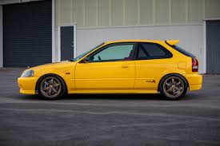

O Honda Civic Type R 1997 (código de chassi EK9) foi a primeira versão de alto desempenho do modelo. Inicialmente exclusivo para o mercado japonês (JDM), tornou-se lendário pelo seu foco extremo em pista, combinando baixo peso, motor aspirado de alta rotação e dirigibilidade cirúrgica.
Para reduzir o peso para apenas 1.050 kg, a Honda removeu o isolamento acústico e outros confortos. O carro foi equipado de fábrica com:
Por ser um modelo voltado originalmente ao mercado interno japonês (JDM), ele não foi vendido oficialmente no Brasil em 1997. Encontrar um exemplar autêntico EK9 exige importação independente, e você pode acompanhar entusiastas ou carros raros à venda em fóruns e plataformas como o Mercado Livre ou Webmotors.Caso você tenha interesse pela versão atual e moderna do modelo, confira os detalhes e disponibilidade da geração contemporânea vendida no país pela Honda Daitan.